All figures
Every figure from the book, free for noncommercial use, as SVG (from the original PostScript).
Chapter 1: Introduction
{kind=link}
Chapter 2: Number Systems and Infinity
{kind=link}
{kind=link}
{kind=link}
{kind=link}
Chapter 3: Computability and Incomputability
{kind=link}
Chapter 5: Self-Similarity and Fractal Geometry
 Figure 5.1
Figure 5.1 Figure 5.2
Figure 5.2 Figure 5.3
Figure 5.3 Figure 5.4
Figure 5.4 Figure 5.5
Figure 5.5 Figure 5.6
Figure 5.6 Figure 5.7
Figure 5.7 Figure 5.8
Figure 5.8 Figure 5.9
Figure 5.9 Figure 5.10
Figure 5.10 Figure 5.11
Figure 5.11Chapter 6: L-Systems and Fractal Growth
Figure 6.1
{kind=link}
{kind=link}
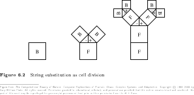
Figure 6.2Figure 6.3{kind=link}
{kind=link}
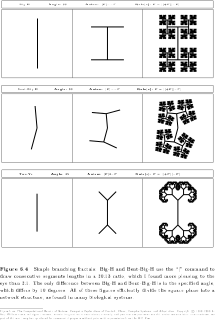
Figure 6.4{kind=link}
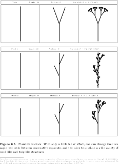
Figure 6.5{kind=link}
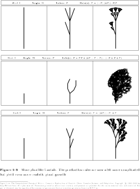
Figure 6.6{kind=link}
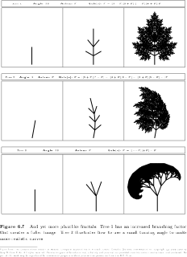
Figure 6.7{kind=link}
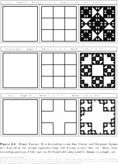
Figure 6.8{kind=link}
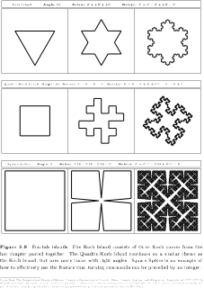
Figure 6.9{kind=link}
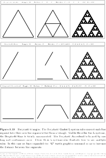
Figure 6.10{kind=link}
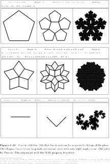
Figure 6.11Chapter 7: Affine Transformation Fractals
{kind=link}
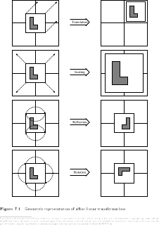
Figure 7.1{kind=link}
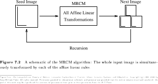
Figure 7.2Figure 7.3Figure 7.4{kind=link}
{kind=link}
{kind=link}
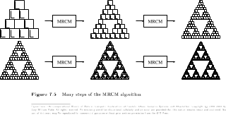
Figure 7.5{kind=link}
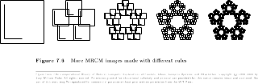
Figure 7.6{kind=link}
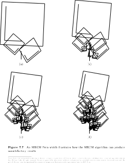
Figure 7.7{kind=link}
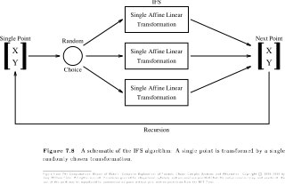
Figure 7.8{kind=link}
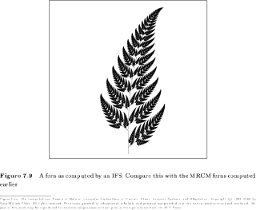
Figure 7.9{kind=link}
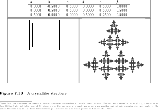
Figure 7.10{kind=link}
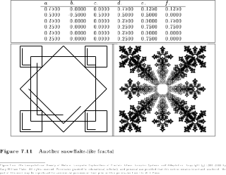
Figure 7.11{kind=link}
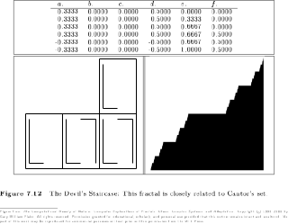
Figure 7.12{kind=link}
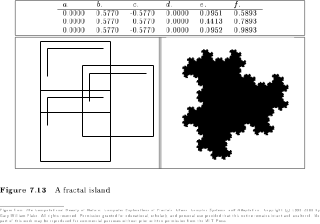
Figure 7.13{kind=link}
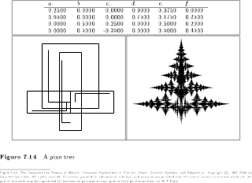
Figure 7.14{kind=link}
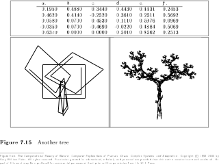
Figure 7.15{kind=link}
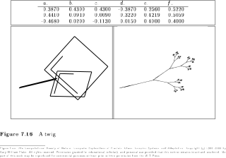
Figure 7.16{kind=link}
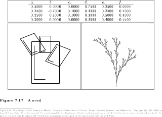
Figure 7.17Chapter 8: The Mandelbrot Set and Julia Sets
{kind=link}
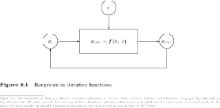
Figure 8.1{kind=link}
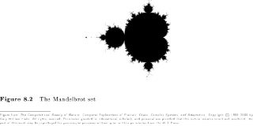
Figure 8.2{kind=link}
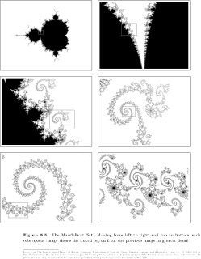
Figure 8.3{kind=link}
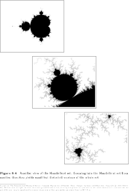
Figure 8.4{kind=link}
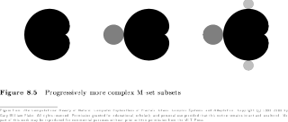
Figure 8.5{kind=link}
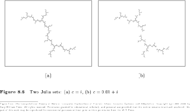
Figure 8.6{kind=link}
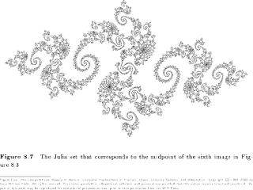
Figure 8.7{kind=link}
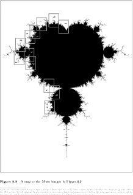
Figure 8.8{kind=link}
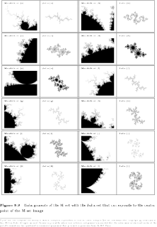
Figure 8.9Chapter 9: Postscript: Fractals
{kind=link}
{kind=link}
{kind=link}
Chapter 10: Nonlinear Dynamics in Simple Maps
{kind=link}
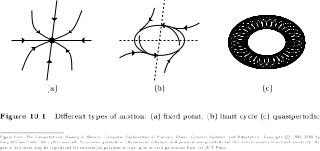
Figure 10.1{kind=link}
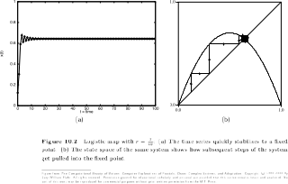
Figure 10.2Figure 10.3{kind=link}
{kind=link}
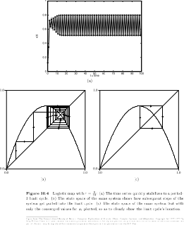
Figure 10.4{kind=link}
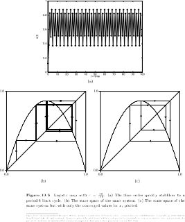
Figure 10.5{kind=link}
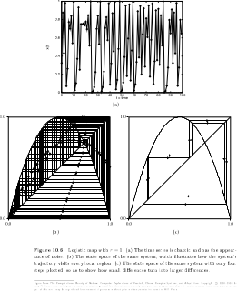
Figure 10.6{kind=link}
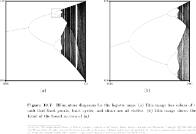
Figure 10.7{kind=link}
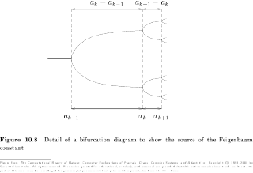
Figure 10.8{kind=link}
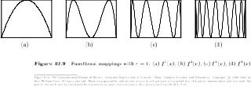
Figure 10.9{kind=link}
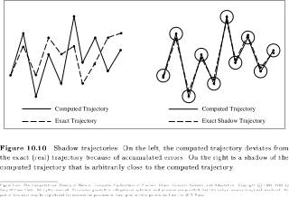
Figure 10.10Chapter 11: Strange Attractors
 Figure 11.1
Figure 11.1 Figure 11.2
Figure 11.2 Figure 11.3
Figure 11.3 Figure 11.4
Figure 11.4 Figure 11.5
Figure 11.5 Figure 11.6
Figure 11.6 Figure 11.7
Figure 11.7 Figure 11.8
Figure 11.8 Figure 11.9
Figure 11.9 Figure 11.10
Figure 11.10 Figure 11.11
Figure 11.11 Figure 11.12
Figure 11.12 Figure 11.13
Figure 11.13Chapter 12: Producer-Consumer Dynamics
Figure 12.1Figure 12.2Figure 12.3Figure 12.4Figure 12.5Figure 12.6Figure 12.7Figure 12.8Figure 12.9Figure 12.10
{kind=link}
{kind=link}
{kind=link}
{kind=link}
{kind=link}
{kind=link}
{kind=link}
{kind=link}
{kind=link}
{kind=link}
Chapter 13: Controlling Chaos
{kind=link}
{kind=link}
{kind=link}
{kind=link}
{kind=link}
{kind=link}
Chapter 15: Cellular Automata
 Figure 15.1
Figure 15.1 Figure 15.2
Figure 15.2 Figure 15.3
Figure 15.3 Figure 15.4
Figure 15.4 Figure 15.5
Figure 15.5 Figure 15.6
Figure 15.6 Figure 15.7
Figure 15.7 Figure 15.8
Figure 15.8 Figure 15.9
Figure 15.9 Figure 15.10
Figure 15.10 Figure 15.11
Figure 15.11 Figure 15.12
Figure 15.12 Figure 15.13
Figure 15.13 Figure 15.14
Figure 15.14 Figure 15.15
Figure 15.15 Figure 15.16
Figure 15.16 Figure 15.17
Figure 15.17Chapter 16: Autonomous Agents and Self-Organization
{kind=link}
{kind=link}
{kind=link}
{kind=link}
{kind=link}
{kind=link}
{kind=link}
{kind=link}
{kind=link}
Chapter 17: Competition and Cooperation
{kind=link}
{kind=link}
{kind=link}
{kind=link}
Chapter 18: Natural and Analog Computation
{kind=link}
{kind=link}
{kind=link}
{kind=link}
{kind=link}
{kind=link}
{kind=link}
{kind=link}
Chapter 20: Genetics and Evolution
{kind=link}
{kind=link}
{kind=link}
{kind=link}
Chapter 21: Classifier Systems
{kind=link}
{kind=link}
{kind=link}
{kind=link}
{kind=link}
{kind=link}
{kind=link}
Chapter 22: Neural Networks and Learning
Figure 22.1Figure 22.2Figure 22.3Figure 22.4Figure 22.5Figure 22.6Figure 22.7Figure 22.8Figure 22.9Figure 22.10Figure 22.11Figure 22.12Figure 22.13Figure 22.14Figure 22.15Figure 22.16
{kind=link}
{kind=link}
{kind=link}
{kind=link}
{kind=link}
{kind=link}
{kind=link}
{kind=link}
{kind=link}
{kind=link}
{kind=link}
{kind=link}
{kind=link}
{kind=link}
{kind=link}
{kind=link}
{kind=link}
{kind=link}
{kind=link}